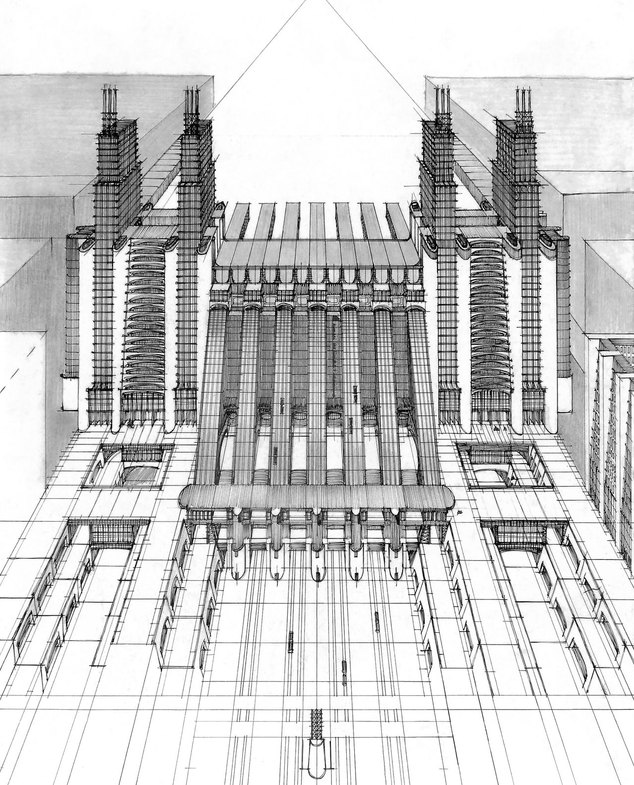

References / Architecture / 471
Station for aeroplanes and trains,
La Città Nuova
Antonio Sant’Elia’s drawing for the Città Nuova shows a station where trains run under a landing strip, between towers of lifts and stepped buildings, on several street levels at once.
- Source
- Lombardia Beni Culturali: Stazione d'aeroplani e treni ferroviari, con funicolari e ascensori su tre piani stradali
- Creator
- Antonio Sant’Elia (attributed by the catalogue)
- Made
- 1914
- Style
- Italian Futurism (agent-proposed, not yet reviewed by a person)
- Moods
- Mechanical, monumental, fast
- Evidence
- Downloaded and inspected a Commons file_1914_ART_Antonio_Sant%27Elia_2023_RET_WjArendshorst.png) (original 2210 × 2733 px; a 1280 × 1583 px rendering was inspected and stored). The uploader, WjArendshorst, says the image was edited “for a cleaner look” and does not name the scan it started from, so tone and paper texture are not reliable. The physical work is most likely the definitive drawing in the Musei Civici di Como, inventory A 342; a preliminary version, A 343, also exists, and this image was not compared with either.
- Reviewed
- Rights
- Open license, stored. License: CC0-1.0. Rights policy
Context
Black pencil, blue pencil, and black ink on tracing paper, 500 × 390 mm, 1914. Musei Civici di Como, Pinacoteca Civica, Palazzo Volpi, inventory A 342. The catalogue attributes it to Sant’Elia (1888–1916). Lombardia Beni Culturali, SIRBeC 1m030-00142.
The catalogue says this is the final version of a rougher preliminary sheet (A 343). It was shown at the first exhibition of the Nuove Tendenze group at the Famiglia Artistica, Milan, 20 May to 10 June 1914, and reproduced with the same caption on the leaflet of the Manifesto of Futurist Architecture of 11 July 1914. Lombardia Beni Culturali.
Observed
- One-point perspective seen from high above: all lines run to a vanishing point at the top center, marked by two converging construction lines.
- Seven parallel ribbed vaults or tracks fall from a raised platform toward the viewer and pass under a horizontal bridge.
- Four tall towers of stacked cages, with paired masts on top, flank the central tracks; between each pair is a column of stacked arched bays.
- Sunken courtyards and long stepped blocks fill the foreground on both sides; large plain blocks frame the far edges.
- Small vehicles appear on the tracks and on the road in front.
- The drawing is fine black linework with flat gray shading; it is symmetrical about the vertical axis.
Why it belongs
Here the Futurist subject of speed becomes infrastructure: transport lines, lifts, and bridges are the building, not services hidden inside it. The overhead perspective makes the plan itself look like motion converging on a point.
The symmetry is unusual for Futurism and is a reminder that the movement’s architecture is monumental rather than scattered.
Borrow
Use a steep one-point perspective so that parallel lines converge hard and pull the eye into the page.
Express circulation (tracks, ramps, lift shafts) as the main forms of a composition.
Stack levels visibly, with bridges crossing over lower paths.
Measured
Machine-extracted by tools/image-traits.py on . Full measurement.
- Mean chroma
- 0
- Palette
- #ffffff 41%
- #d0d0d0 10%
- #b0b0b0 9%
- #c5c5c5 6%
- #7c7c7c 5%
- #f2f2f2 5%
- #e6e6e6 5%
- #929292 5%

